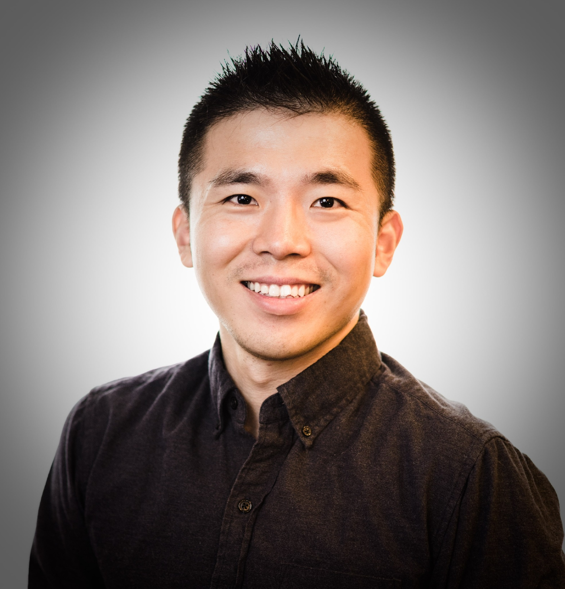

◌
01心理咨询
为经历焦虑、抑郁、创伤、哀伤、职业倦怠、人生转变与跨文化适应的成年人提供循证、创伤知情的心理咨询。

从系统视角理解临床实践
我是一名常驻休斯顿的执业临床社会工作者及委员会认可临床督导，并创办 Mind X社区，致力于推动创伤知情、循证且具有文化回应性的心理健康服务。
我的工作涵盖心理咨询、临床督导、专业咨询、教育培训与专业社群建设。我以交叉性视角理解文化、系统、身份与个人经历如何共同塑造心理健康与助人实践。
02 / 我的工作
为经历焦虑、抑郁、创伤、哀伤、职业倦怠、人生转变与跨文化适应的成年人提供循证、创伤知情的心理咨询。
支持成长中的临床工作者发展专业自信、临床判断、文化谦逊与真实的职业身份。
围绕执业发展、临床创新、职业成长及文化回应性服务体系提供策略性专业咨询。
围绕创伤、文化、社会正义、心理健康与专业发展交汇处开展教学与培训。
03 / 职业历程
移动或点击时间轴，探索部分职业章节。
创办人 / 临床工作者 — directing a psychotherapy collective while providing psychotherapy, clinical supervision, practice consultation, and building a global professional support network.
04 / 教育背景
杜兰大学 · 社会工作
杜兰大学 · 灾害韧性领导力
杜兰大学社会工作学院 · 灾害心理健康与创伤研究
杜兰大学 · 心理学
“我希望通过合作推动专业领域的发展——与同行建立伙伴关系、发展督导关系，并创造知识分享与共同成长的空间。”
— 黄宁杰 DSW, LCSW-S05 / 合作
欢迎临床工作者、机构与社群与我交流合作、专业咨询、教育培训及心理健康创新。